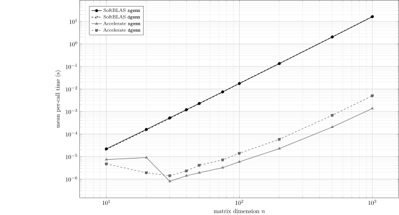

Urbit’s
deterministic functional architecture requires that
all computations be reproducible to the bit
across hosts. This article describes the design
and implementation of a deterministic numerical
stack, including a software-defined blas library, a
software-defined universal number (unum) library,
a rank-\(N\) array library with type dispatch, and a
transcendental functions library. We benchmark
Chebyshev basis functions with Cody–Waite range
reduction, Taylor series expansions, and other
numerical methods.
Urbit is a deterministic functional operating system whose
state is a pure function of its event log (~sorreg-namtyv et al.,
2016). An event log replay must recover the state exactly,
on any conforming runtime, indefinitely. This is not a
performance nicety; it is the property that makes the system
auditable, upgradeable, and peer-verifiable. Determinism is a
load-bearing property all the way down.
Numerical computing is one of the most slippery places for
determinism to leak through its abstractions. Standard
ieee 754 floating-point arithmetic is not associative, as
an example, but the situation is much more dire. The
ieee 754 standard (2019) specifies the result of each
individual operation under a given rounding mode, but a
real numerical program is a composition of operations,
and the standard says little about composition. A fused
multiply-add computes \(a\cdot b + c\) with a single rounding where two
separate operations would round twice; a vectorized dot
product sums partial results in an order chosen by the
hardware; and a threaded blas reassociates a reduction
differently depending on how many cores happened to be
available.1
Each of these is standards-conformant while none is
deterministic across hosts.
The treatment of floating-point representation in Hoon by
~lagrev-nocfep (2024) established the foundation for Urbit’s
deterministic numerical computing stack. This article
expounds both the state of the art of Urbit’s basic numerical
packaging and the next layer: dense linear algebra, where the
nondeterminism of conventional blas and ieee 754 floating-point
mathematics are acute and consequential. We introduce
SoftBLAS,2
a software-defined blas package;
SoftUnum,3
a software-defined universal number (unum) package; and
other components of a C-based numerical stack that is
deterministic and compliant with the Hoon specification. We
further describe the “ray” data structure which facilitates the
type dispatch for different numeric representations while
preserving identity between Nock-specified atoms and
C-recognized arrays.
The central conceit is architectural. In conventional
high-performance computing, C (or Fortran) takes
primacy: the C implementation is what runs,
and correctness is in some sense whatever the C
does.4
Urbit inverts this relationship. The Hoon/Nock isa
implementation is the specification; the C jet is an optimization
that is obligated to produce the specification’s exact output for
every input, and should be discarded silently whenever
it cannot. Determinism then is not merely a testable
desideratum but a mandate whose violation the Nock-side
architecture cannot express.
2 Background and Literature
Although the solution of partial differential equations is one of
the oldest significant applications of computing (Charney,
Fjortoft, and Neumann, 1950), no standard library emerged
for decades—unsurprising given the churn of hardware
architectures, the diversity of numerical methods, the lack of a
common interface definition, the rapid evolution of programming
languages, and the active development of linear algebraic
algorithms.5
Given that situation, rigorous bitwise determinism was a concern
of vanishingly small importance, whether cross-platform
or even for serial runs on the same machine. However,
over time the advent of high-performance computing, the
emergence of blas as a pseudo-standard, and the increasing
importance of reproducibility in numerical computing
have made determinism both more pressing and more
achievable.
2.1 BLAS as a pseudo-standard
The Basic Linear Algebra Subprograms originate with
Lawson, Hanson, Kincaid, and Krogh’s 1979 specification of
vector operations on strided arrays (Lawson et al., 1979),
later extended to matrix-vector (Level 2) and matrix-matrix
(Level 3) routines. The levels track both chronology and
(naïve) asymptotic cost: Level 1 is \(O(n)\), Level 2 is \(O(n^2)\), Level 3 is \(O(n^3)\).
blas is less a standard than a pseudo-standard—a widely
honored set of names and calling conventions (?axpy, ?gemv,
?gemm, with type prefixes s, d, c, z) with many independent
implementations. (The original blas predated floating-point
standardization as ieee 754 by several years.) That plurality is
exactly the problem for a consensus system: two conforming
blas libraries routinely disagree in the low bits, and the
same library disagrees with itself across machines and
thread counts. Despite this fuzziness, blas quickly took its
place as the bedrock layer of numerical and scientific
computation.
2.2 Sources of floating-point nondeterminism
Cross-host divergence in a blas computation has a small
number of recurring causes:
Reduction order. Floating-point addition is not
associative, so a dot product or a gemm inner loop
summed in a different order yields a different rounded
result; tiled and multithreaded implementations
choose that order at run time.
Fused multiply-add. Hardware that contracts \(a\cdot b + c\) to one
rounding produces different bits than two roundings,
and whether contraction happens is a compiler- and
target-dependent decision.
Vectorization and instruction selection.
simd horizontal sums, x87 80-bit intermediates, and
differing libm-style kernels for fast paths all perturb
the last bits.
Transcendental functions. The elementary functions
are not specified to the bit by ieee 754 at all, and
every platform libm differs in its implementation.
~lagrev-nocfep further enumerated other reasons that
contemporary floating-point mathematics cannot be
considered deterministic even when single-threaded
on a particular hardware target and instruction set
architecture.6
2.3 Reproducibility
Numerical determinism, or for our purposes synonymously
reproducibility, requires that a computation yield the same
result to the bit regardless of the platform on which it is
carried out. This would not necessarily require the same
algorithmic implementation in all cases (since all correct
algorithms should converge on the true value given enough
runway), but in practice floating-point quirks force this
consideration in almost all cases.
Projects like ReproBLAS have yielded reproducible
summation (independent of summation order) through
error-free transformations and pre-rounding (Demmel and
Nguyen, 2013). Intel’s Conditional Numerical Reproducibility
offers run-to-run consistency within a fixed code path under
documented constraints (Intel Corporation, 2023). The
plasma and magma projects (Agullo et al., 2009) took
the opposite design stance for performance: dynamic,
dependency-driven scheduling that deliberately does not
fix reduction order, which is excellent for throughput
and fatal for bit-reproducibility. On the scalar side,
correctly rounded elementary-function libraries—cr-libm
(Daramy et al., 2003), rlibm (Lim and Nagarakatte,
2021), and the core-math project (core-math Project,
2022)—show that the transcendentals can be pinned down to
the last bit, at a cost.
Urbit is distinguished by its requirement that determinism
be not one option among many but a first-class feature of the
OS and runtime. This requirement is structurally enforced by
the Nock isa–jetted runtime relationship. Jets utilize
relatively faster code paths and reductions but produce
the identical result as the slow path: the specification
is authoritative. Thus linear algebra techniques, even
those following the blas pseudo-standard, must follow a
reproducible fast path on all supported architectures.
3 Deterministic Architecture
A Nock computation is a pure function from noun to noun. A
jet is a native routine registered against a named Hoon core;
when the interpreter evaluates that core, it may run the jet
instead of the Nock. The iron discipline that makes this sound
is simple: the jet must produce the same noun as the Hoon,
for every input, or it is a bug in the runtime. A divergence
between jet and specification is termed a jet mismatch
and is treated as a correctness failure, not a numerical
tolerance.
The Hoon (or its compiled result as Nock) is therefore the
specification, in the strong sense that it defines what the right
answer is. The C jet is an accelerant with no semantic
authority. In some cases, the jet may decline: if a native
routine returns the sentinel u3_none, the interpreter falls
through and evaluates the Hoon directly. The consequence for
numerics is that an arithmetic kind with no jet, or with a jet
that punts on some inputs, is not unsupported—it is merely
slow. The specification still runs, and the answer is still
defined and still deterministic, because Hoon over exact nouns
is deterministic by construction.
This crystallizes, or perhaps even inverts, the usual
relationship between correctness and performance. In
conventional hpc, one has an optimized C or Fortran program,
the optimized C arguably is the program and its source
reference implementation is documentation (to say nothing
of its documentation). There may of course be bugs in
the compiled code, but the optimized program is the
concrete artifact. By contrast in Urbit, the optimized
C program must justify itself against an independent
authoritative definition. Determinism follows from two facts:
the specification is a pure function of its inputs, and
the jet is contractually bit-identical to the specification.
A host without the jet computes the same bits more
slowly; a divergent jet is non-conforming and must be
repaired.
For our linked implementations like SoftBLAS, this means
the library is never permitted to be “approximately”
the specification. A gemm jet that summed its inner
products in a hardware-chosen order would be a
mismatch even if every individual rounding were ieee
754-correct, because the Hoon specification sums them
in one fixed order and the jet must reproduce that
number.7
Our blas must satisfy the constraint of determinism to be
admissible as a jet at all; thus, SoftBLAS was developed on
top of SoftFloat (Hauser, 2018). This yields correctness and
consistency rather than hardware-optimized performance.
3.1 The numerical stack
Urbit natively supports ieee 754 floating-point mathematics
in its %base distribution, and through the supplied numerical
stack additionally supports unums (posits and quires);
complex ieee 754; two’s complement integers; and fixed-point
mathematics.
The numerical libraries are layered as follows; each layer is
Hoon-normative with optional, independently verifiable C
jets.
Libraries. Imported from /lib at compile time.
/lib/math. The basic ieee 754 arithmetic
and transcendental functions library supports
four precisions (16-bit @rh, 32-bit @rs, 64-bit
@rd, and 128-bit @rq) across a battery of
functions like exponentiation and logarithm,
trigonometric and
inverse-trigonometric functions, and rounding
and comparison utilities. Transcendental
functions are implemented as Chebyshev
minimax polynomials with Cody–Waite range
reduction (Cody and Waite, 1980). Jets run on
SoftFloat (Hauser, 2018). Originally composed
by ~lagrev-nocfep and ~mopfel-winrux.
/lib/twoc.
A two’s-complement integer arithmetic package
supporting scalar operations. Jetted with
an internal library against gmp. Originally
composed by ~litlep-nibbyt.
/lib/fixed. Fixed-point (Q-format) arithmetic
at power-of-two total widths. Unjetted beyond
standard integer arithmetic jets because de
facto integer mathematics hold. Originally
composed by ~lagrev-nocfep.
/lib/unum.
2022-standard posit arithmetic (Posit Working
Group, 2022) at five widths (8-bit @rpb; 16-bit
@rph; 32-bit @rps; 64-bit @rpd; 128-bit @rpq,
i.e. posit8 through posit128), \(es=\text {2}\) throughout, with
quire accumulation. See Section 6.1 on oracle
coverage. Jetted with SoftUnum. Originally
composed by ~lagrev-nocfep.
/lib/complex. Complex arithmetic over the four
ieee 754 precisions, riding on the scalar float
layer. Originally composed by ~lagrev-nocfep.
Lagoon (Linear AlGebra in hOON). A rank-\(N\) array
library (a $ray) carrying a $kind field that dispatches to
the appropriate arithmetic: %i754, %uint, %int2,
%unum, %cplx, %fixp. Storage is row-major and
identical in memory layout to underlying runtime arrays;
the %i754 Level-3 path is jetted through SoftBLAS and
the %unum path is jetted through SoftUnum. Composed
by ~lagrev-nocfep and ~mopfel-winrux.
Saloon (Scientific ALgorithms in hOON). Scientific
algorithms over Lagoon rays. Types correspond to the Lagoon
field. Element-wise transcendentals are dispatched through
/lib/math, and dense routines such as the Jacobi symmetric
eigendecomposition.8
Composed by ~lagrev-nocfep and ~mopfel-winrux.
Maroon (MAchine leaRning in hOON). An inchoate
machine learning library built atop Lagoon and
Saloon.
The single most consequential design choice is Lagoon’s $kind
dispatch with fall-through (Listing 1). One basic array type
serves six arithmetics; adding a seventh requires only a
Hoon implementation, and a jet for it is optional and
separately auditable. This is architecturally distinct from
NumPy (which supplies one dtype per array with no
in-band kind tag); from Julia (which has compile-time
specialization per concrete type); and from the apl/J/K
tradition (which supply a uniform numeric tower with no
explicit kind dispatch). Because an un-jetted kind still
runs its Hoon, the specification is authoritative for every
kind, jetted or not. Two other features of $ray’s design
call attention: the msb pinned 1 bit, which preserves
otherwise-stripped leading zeroes in atoms and thus makes the
atom representation exactly match the expected C memory
layout of an array; and the tail=* arbitrary noun specialization
field, which preserves jet axis addresses in case of future
extension.9
Listing 1:
Lagoon
base
types.
From
/sur/lagoon.
+$ray::$ray: n-dimensional array$: =meta::descriptordata=@ux::data, row-major order==5::+$prec [a=@ b=@]::fixed-point precision+$meta::$meta: metadata for a $ray$: shape=(list @)::list of dimension lengths=bloq::logarithm of bitwidth10=kind::name of data typetail=*::per-kind specialization data==::+$kind::$kind: type of array scalars15$? %i754::IEEE 754 float%uint::unsigned integer%int2::2s-complement integer (/lib/twoc)%unum::unum/posit (/lib/unum)%cplx::complex (/lib/complex)20%fixp::fixed-point Q a.b (/lib/fixed)==::+$baum::$baum: ndray with metadata$: =meta::25data=ndray::==::+$ndray::$ndray: n-dim array as list$@ @::single item30(list ndray)::nonempty list of children
3.2 SoftBLAS and SoftUnum
At the current time, two external numerical libraries
facilitate the runtime jets: SoftBLAS and SoftUnum.
Both are software-defined, deterministic, and
cross-platform.10
3.2.1 SoftBLAS
SoftBLAS is built on Berkeley SoftFloat 3e (Hauser,
2018). Following SoftFloat, it requires a C99-compliant
host and passes all floating-point quantities by value.
Every arithmetic primitive used by every routine is a
SoftFloat call: there is no path to a hardware floating-point
instruction, and therefore no path to hardware-dependent
rounding, contraction, or intermediate precision. For
reasons enumerated by ~lagrev-nocfep (2024), this is
one of the only current methods which guarantees that
the output of a floating-point computation is a pure
function of its inputs, and therefore deterministic across
hosts.11
SoftBLAS covers the four ieee 754 binary precisions used
across the stack: half (h), single (s), double (d), and quadruple
(q).12
Routines follow the blas prefixing convention extended to the
half and quad types. Real-valued routines across all three
levels supply a subset sufficient for Lagoon requirements as of
the cited release; complex-valued routines are in progress but
sufficient to support Lagoon’s requirements.
Table 1: SoftBLAS coverage by level (real-valued).
Level
Cost
Representative routines
1
\(O(n)\)
?dot, ?axpy, ?scal, ?nrm2, ?asum, etc.
2
\(O(n^2)\)
?gemv
3
\(O(n^3)\)
?gemm
The rounding mode is a global, softblas_roundingMode (a char
typedef declared in softblas.h) interpreted by the underlying SoftFloat
layer.13
The admissible values are the SoftFloat 3e rounding
modes (round to nearest even, round toward zero,
round toward \(+\infty \), round toward \(-\infty \), and round to
nearest-away).14
The default is round to nearest-even, %n. The Hoon
specification names the rounding mode in the %base
distribution, and the jet is required to honor it.
SoftBLAS satisfies three conditions that conventional blas
libraries do not:
Fixed reduction order. Every
reduction (dot products, gemm inner loops, norms)
sums in one canonical order, identical to the order
the Hoon specification uses. No tiling or threading is
permitted to reassociate it. (Urbit runtimes are, in
any case, single-threaded at the time of writing.)
No contraction. Multiply-add is two roundings, never
a fused one, because the specification rounds twice.
There is no fma path, which as ~lagrev-nocfep (2024)
exhibited is prone to nondeterminism.
Software rounding. All rounding is performed by
SoftFloat in software, so it is identical on every host
regardless of native floating-point behavior.
3.2.2 SoftUnum
SoftUnum is a software-defined universal number (unum)
library that implements the 2022 posit standard (Posit
Working Group, 2022). It supports five widths (8, 16, 32, 64,
and 128 bits) with \(es=\text {2}\) throughout. The quire accumulator is
implemented in software and is bit-identical across hosts. The
library is jetted into Lagoon’s %unum kind.
4 Types
The mathematical base types are enumerated in Listing 2.
These have occasioned the introduction of several new
atom auras, given in Table 2. We have not introduced
an aura for two’s-complement integers at the current
time, but these will likely nest under @s (signed integer)
in the future. The @rqb through @rqq auras are quire
accumulators for the corresponding posit widths,
and are intended for internal algorithms not general
use.15
Listing 2:
Mathematical
base
types.
From
/sur/lagoon.
+$kind::$kind: type of array scalars$? %i754::IEEE 754 float%uint::unsigned integer%int2::2s-complement integer (/lib/twoc)5%unum::unum/posit (/lib/unum)%cplx::complex (/lib/complex)%fixp::fixed-point Q a.b (/lib/fixed)==
Table 2: Existing and new atom auras. From /sur/lagoon.
Atom aura
Description
@rh
16-bit ieee 754 float
@rs
32-bit ieee 754 float
@rd
64-bit ieee 754 float
@rq
128-bit ieee 754 float
@rpb
8-bit posit
@rph
16-bit posit
@rps
32-bit posit
@rpd
64-bit posit
@rpq
128-bit posit
@rqbH
8-bit quire (128-bit accumulator for @rpb)
@rqhI
16-bit quire (256-bit accumulator for @rph)
@rqsJ
32-bit quire (512-bit accumulator for @rps)
@rqdK
64-bit quire (1024-bit accumulator for @rpd)
@rqqL
128-bit quire (2048-bit accumulator for @rpq)
@ch
32-bit complex (two 16-bit floats)
@cs
64-bit complex (two 32-bit floats)
@cd
128-bit complex (two 64-bit floats)
@cq
256-bit complex (two 128-bit floats)
Aura types have been named after the target width in the
cases of complex numbers and quires.
5 Contributions
This deterministic numerical stack contributes several
properties to the broader discussion of numerical determinism
and reproducibility. Determinism is a structural property of
Urbit: while reproducible floating point is a standing goal of
several parties (Demmel and Nguyen (2013); Intel Corporation
(2023)), Urbit contributes a first-class philosophical
requirement.16
Although not novel, the library covers a broad range of
bit widths and precisions, including half-precision and
quadruple-precision, which are not widely supported in
other numerical computing libraries. Likewise we provided
faithfully-rounded elementary functions at most precisions and
quantify their accuracy.
Lagoon’s heterogeneous-kind array design with a single
$ray type is a novel approach to array libraries, allowing for
in-band kind dispatch and fall-through to specification. As
mentioned previously, this permits more flexibility and
extensibility in the base representation than NumPy, Julia, or
the apl/J/K tradition. The kind field allows for easy addition
of new numeric types without requiring changes to the
underlying array structure, and the fall-through mechanism
ensures that un-jetted kinds can still be computed correctly
using the Hoon specification.
6 Benchmarks
While a software-defined floating-point library will never
match the performance of a hardware-accelerated one, we have
nevertheless seen impressive speedups by refining the
algorithms and the runtime jets. The benchmarks reported
here are for a single-threaded, single-core execution on a
modern 64-bit compiler cpu (AArch64, Apple M4 Max).
They should serve as order-of-magnitude indications on
contemporary hardware.
The first benchmark results tabulate what the jetted
system buys over interpreting the Hoon specification directly.
Table 3 reports jetted versus interpreted time for ieee 754
/lib/math. For most trials, 100,000 runs were evaluated and
averaged.17
For the very slowest functions (e.g. half-precision Taylor series
inverse sine), this number was modulated downwards
substantially.18
The original /lib/math and Saloon implementations of
transcendentals were naïve Taylor series expansions and serve
as a worst-case demonstration. Accuracies are comparable for
the number of Taylor series terms utilized to achieve an
appropriate relative tolerance, but the Chebyshev basis
functions are uniformly faster and more correct. All values
reported are measured within a running Urbit ship (rather
than from an independent test harness).
The /lib/unum transcendentals are currently implemented
as Chebyshev basis expansions like the /lib/math operations.
Results are included in Table 4.
6.1 Verification
The determinism architecture reduces correctness to one
question per routine: does the jet equal the specification
on every input? We answer it insofar as possible with
oracles external to both the Hoon and C implementations.
SoftFloat by and large served as the oracle for the ieee 754
floating-point operations (real and complex), while the posit
mathematics were verified against two independent references:
SoftPosit (Leong, 2018) (posit8, posit16, posit32) and
the Universal library (Omtzigt et al., 2020) (posit64,
posit128).
The quire’s defining property—exact accumulation until a
single final rounding—is checked directly against an exact
rational sum.
Elementary functions are checked against mpfr (Fousse
et al., 2007) at high precision. At half precision the input
space is \(\text {2}^\text {16}\) values and the test is exhaustive; at single precision
the \(\text {2}^\text {32}\) space is likewise tested in full. At double and quadruple
precision, where exhaustive testing is infeasible, we report
maximum observed unit in the last place (ulp) error over a
sampled and edge-weighted input set rather than a guarantee.
We claim a faithful-rounding (\(\leq \text {1}\)ulp) result where the
testing supports it and a measured bound where it does
not.
We report the errors of the transcendental functions in terms
of ulp error, which is a standard measure of floating-point
accuracy.19
The maximum observed ulp error for each function is
reported against an independent oracle, which is typically a
high-precision library such as mpmath. The results are
summarized in Tables 5 and 6.
Table 3: Elapsed times and relative slowdowns of ieee
754 jetted Chebyshev functions for double-precision @rd
atom operations with /lib/math, interpreted Chebyshev
functions, and interpreted Taylor series functions.
Slowdown is reported relative to the fastest case, the jetted
Chebyshev functions.
Arm
Chebyshev (jet)
Chebyshev (int.)
Taylor (int.)
C. slowdown
T. slowdown
+exp
1.67 µs
296 µs
11.0 ms
177×
6,565×
+log
1.76 µs
164 µs
13.3 ms
94×
7,600×
+sin
1.95 µs
278 µs
0.94 ms
143×
480×
+cos
1.97 µs
275 µs
0.94 ms
140×
476×
+tan
4.53 µs
241 µs
1.30 ms
53×
288×
+atan
2.23 µs
47.6 µs
109 ms
21×
48,784×
+atan2
2.72 µs
56.2 µs
11.5 ms
21×
4,237×
+asin
2.07 µs
54.8 µs
205 ms
27×
99,130×
+acos
2.10 µs
51.2 µs
5.17 ms
24×
2,459×
+sqt
1.92 µs
10.3 µs
73.5 µs
5×
38×
+cbt
2.44 µs
467 µs
111 ms
192×
45,723×
+pow
2.87 µs
656 µs
1.68 ms
229×
585×
+pow-n
2.62 µs
217 µs
219 µs
83×
83×
+log-2
2.34 µs
164 µs
13.3 ms
70×
5,668×
+log-10
2.38 µs
165 µs
13.4 ms
69×
5,638×
Table 4: Elapsed times and relative slowdowns of
unum jetted Chebyshev functions for 32-bit @rps
posit32 operations with /lib/unum, interpreted Chebyshev
functions, jetted Taylor series functions, and interpreted
Taylor series functions. Slowdown is reported relative to
the jetted Chebyshev functions.
Arm
Chebyshev (jet)
Chebyshev (int.)
Taylor (jet)
Taylor (int.)
C. slowdown
T. slowdown
+exp
16.5 µs
550 µs
25.3 µs
19.4 ms
33×
1,176×
+log
17.9 µs
739 µs
39.9 µs
39.1 ms
41×
2,184×
+sin
18.3 µs
813 µs
34.8 µs
32.3 ms
44×
1,765×
+cos
18.3 µs
817 µs
35.7 µs
32.5 ms
45×
1,775×
+tan
19.5 µs
844 µs
—
—
43×
—
+atan
18.3 µs
832 µs
850.3 µs
63.7 ms
45×
3,480×
+asin
39.6 µs
2.01 ms
—
—
50×
—
+acos
40.9 µs
2.15 ms
—
—
52×
—
+sqt
17.1 µs
209 µs
17.3 µs
341 µs
12×
20×
+cbt
32.0 µs
1.76 ms
—
—
55×
—
+pow
31.2 µs
1.40 ms
60.7 µs
56.9 ms
45×
1,824×
+pow-n
2.81 µs
698 µs
—
—
248×
—
+log-2
18.1 µs
743 µs
—
—
41×
—
+log-10
18.1 µs
756 µs
—
—
42×
—
+fdp
259 ns
157 µs
270 ns
205 µs
606×
—
The libraries instrumented with the Chebyshev basis are
designed to produce “faithfully rounded functions” rather than
“correctly rounded functions” for composed operations, while
dedicated (non-composed) kernels frequently do better still.
The distinction is that a faithfully rounded result is within
1 ulp of the exact result (Rump, Ogita, and Oishi, 2008),
while a correctly rounded result is the exact representable
value closest to the exact result. Faithful rounding is often
sufficient for numerical applications and is generally faster to
compute than correct rounding. Truly correct rounding is
often prohibitively expensive, especially for transcendental
functions, and can require much higher intermediate precision to
attain.20
Tables 5 and 6 report the maximum observed ulp error of every
transcendental arm against an independent mpmath-checked
oracle.21
In Tables 5 and 6, the superscripts carry the following
meanings:
c marks a composed
arm,22
whose error is inherited from its constituents’
chained roundings rather than directly controlled.
e marks an exhaustive sweep over the entire input
space. (Unmarked cells describe sampled ranges.)
f marks where an imprecision in a previous version
of the Chebyshev fit led to massive error in the
reduced argument, in which the range reduction
quotient for @rh was not representable in half
precision (Table 7). This was replaced by widening
the intermediate result to @rs, producing a faithful
rounding for @rh as well. As this bug results
from a naïve application of the Chebyshev fit to
half-precision range reduction, we report it as a
cautionary aside.
k marks dedicated kernels for +tan (replacing
the composed sin/cos ratio used at @rh/@rq). A
dedicated kernel was investigated but found to
regress @rh (the 11-bit mantissa leaves insufficient
headroom) and to need a different technique entirely
at @rq (the Chebyshev series coefficients grow
rather than shrink at high degree causing numerical
instability).
n marks /lib/unum’s +cbt, which returns NaR for
negative inputs and so is swept over positive inputs
only.
Table 5: Maximum observed ulp error, /lib/math (ieee
754), against an mpmath-checked oracle. @rh and marked
cells are exhaustive over the full input space; all others are
sampled.
Arm
@rh
@rs
@rd
@rq
+exp
1.00
e
0.86
0.99
0.81
+log
0.84
e
0.61
0.99
0.62
+log-2
1.57
e
0.90
1.21
0.60
+log-10
1.37
e
1.30
1.46
1.10
+sin
0.51
e,f
0.65
0.73
0.73
+cos
0.53
e,f
0.53
0.76
0.72
+tan
1.64
e,f,c
0.94
k
0.76
k
1.67
c
+atan
0.74
e
0.58
0.71
0.53
+atan2
1.80
1.16
1.36
1.35
+asin
1.01
e
0.85
0.84
0.77
+acos
1.00
e
0.98
0.89
0.86
+sqt
0.50
e
0.50
0.50
0.50
+cbt
6.70
c,e
2.62
c
4.39
c
4.29
c
+pow
31.0
c
48.0
c
133.7
c
60.7
c
Table 6: Maximum observed ulp error, /lib/unum
(2022-standard posits), against an mpmath-checked oracle.
All three widths are tested exhaustively.
Arm
@rpb
@rph
@rps
+exp
0
0
0
+log
0
0
0
+log-2
0
0
0
+log-10
0
0
0
+sin
0
0
0
+cos
0
0
0
+tan
0
0
0
+atan
0
0
0
+asin
1
c
1
c
3
c
+acos
1
c
7
c
4
c
+cbt
1
n
2
n
2
n
+pow
3
c
4
c
4
c
+pow-n
2
c
2
c
2
c
Table 7: @rh +sin/+cos/+tan, maximum observed ulp
error before the range-reduction fix (Table 5 reports the
corrected, current values).
Arm
@rh, before fix
+sin
437,291
+cos
1,818,711
+tan
2.16 × 1010
The original Chebyshev-based implementation of the @rh
transcendental functions had a subtle but catastrophic flaw in
its range reduction. The @rh Chebyshev fits were correct, but
the range reduction was performed entirely in half precision,
which is insufficient for large arguments. @rh’s trigonometric
arms did quarter-turn range reduction (\(q=\mathrm {round}(|x|\cdot \frac {\text {2}}{\pi })=|x|\cdot \frac {\text {4}}{\tau }\), \(r=|x|-q\cdot (\frac {\pi }{\text {2}})=|x|-q\cdot (\frac {\tau }{\text {4}})\)) entirely in native
@rh arithmetic, giving every reduction constant and every
intermediate product only an 11-bit-mantissa half-precision
value. Half precision guarantees exact integer representation
only up to 2,048; once \(q\) exceeds that value (\(|x|\) past \(\sim \)500), \(q\)’s own
rounding error was amplified by the \(\frac {\pi }{\text {2}}=\frac {\tau }{\text {4}}\) leading term, injecting a
multi-radian error into the reduced remainder. Table 7
reports the resulting damage, measured before the fix:
catastrophic, and well within @rh’s ordinary input range (max
magnitude \(\sim \)65,504), not an edge case. The fix widens to
@rs (24-bit mantissa, exact \(q\) up to 224, vastly beyond
the dynamic range of @rh) via +widen-hs (exact) and
+narrow-sh (correctly rounded), primitives. These were
verified exhaustively.
Every /lib/unum transcendental with a dedicated,
non-composed kernel is exactly correctly rounded (0 ulp) at
all three tested widths, a stronger guarantee than the ieee 754
/lib/math achieves at any precision, where the best case is
faithful rounding around 0.5–1 ulp rather than 0 ulp. The
composed arms (+pow, +cbt, and +pow-n beyond small
positive exponents) lose this property in both libraries alike,
landing in the 1–134 ulp range depending on precision and
the number of chained roundings the composition involves—an
inherent cost of composition rather than a library-specific
weakness.
6.2 The price of determinism
The third field of benchmarking measures the overhead of
the determinism guarantee relative to a conventional,
nondeterministic, hardware blas. We report SoftBLAS
against Apple’s Accelerate framework—a stock blas on
macOS which dispatches to Apple Silicon’s amx matrix
coprocessor—for sgemm and dgemm (single-threaded to
remove Accelerate’s automatic multithreading as a confound).
We expect software-defined SoftBLAS to be slower; here we
quantify how that cost scales. The results are summarized in
Table 8 and Figure 1.
*At \(n\leq \text {20}\) Accelerate’s own run-to-run standard deviation is
comparable to its mean, so the reported slowdown there is
noise-dominated; the trend is reliable and monotonic
above \(n=\text {30}\) (SoftBLAS’s timings are stable throughout since a
fixed triple loop has no comparable startup-dominated
regime).
Determinism does not levy a fixed tax, but its cost
grows with problem size, from single digits at \(n=\text {10}\) to nearly
four orders of magnitude by \(n=\text {1,000}\) (sgemm) or over three
orders of magnitude (dgemm). SoftBLAS’s triple-nested
loop over SoftFloat calls is a clean \(O(n^3)\) throughout the
range tested (doubling \(n\) consistently multiplies time
by \(\sim \!8\times \)), with no cache blocking or vectorization—each
scalar multiply-add pays a full software floating-point
call.23
Accelerate is sub-cubic through the moderate range (cache
blocking and simd/amx dispatch absorb work that would
otherwise scale as \(n^3\)) before trending back toward cubic
by \(n=\text {1,000}\). In throughput terms, SoftBLAS delivers roughly
0.12 gflop/s at \(n=\text {1,000}\) regardless of precision—consistent
with SoftFloat call overhead, not memory bandwidth,
being the bottleneck—against Accelerate’s approximately
1,477 gflop/s (sgemm) and 401 gflop/s (dgemm), the
latter gap itself illustrating that Accelerate’s single-precision
path better exploits the amx unit’s native format.
This sharply demonstrates a quantitative trade-off between
determinism and performance introduced in Section 3.1:
SoftBLAS is not merely “slower,” but slower by a margin
that widens with the problem sizes—large dense linear
algebra—where blas exists to be fast in the first place. A
deterministic numerical stack should budget accordingly. A
software blas that never touches a hardware floating-point
instruction cannot reach a coprocessor-backed blas’s
throughput, only close the distance to it, which argues in favor
of new paradigms for deterministic numerical computing that
can leverage hardware acceleration without sacrificing
reproducibility.
Table 8: sgemm/dgemm mean per-call time, SoftBLAS
vs. Apple Accelerate, single-threaded, Apple M4 Max. \(n\) is
the (square) matrix dimension.
\(n\)
SoftBLAS sgemm
Accelerate sgemm
slowdown
SoftBLAS dgemm
Accelerate dgemm
slowdown
10
21.9 µs
7.3 µs
3.0×
20.8 µs
4.7 µs
4.4×
20
*
160 µs
9.0 µs
18×
151 µs
1.9 µs
80.0×
30
*
521 µs
0.79 µs
662×
496 µs
1.4 µs
354×
40
1.20 ms
1.4 µs
873×
1.16 ms
2.3 µs
496×
50
2.27 ms
1.9 µs
1,202×
2.22 ms
4.1 µs
545.7×
75
7.44 ms
3.2 µs
2,322×
7.25 ms
7.1 µs
1,020.4×
100
17.3 ms
5.8 µs
2,970×
17.8 ms
13.9 µs
1,282.3×
200
133 ms
22.5 µs
5,921×
135 ms
57.9 µs
2,342×
500
2.02 s
203 µs
9,947×
2.02 s
675 µs
3,000×
1000
16.05 s
1.35 ms
11,853×
16.25 s
4.99 ms
3,257×

Figure 1: sgemm/dgemm mean per-call time vs. matrix
dimension \(n\), log–log, SoftBLAS vs. Apple Accelerate (data
from Table 8). SoftBLAS’s clean \(O(n^3)\) scaling appears as
a straight line of slope 3 throughout (sgemm and
dgemm nearly coincide); Accelerate’s sub-cubic scaling at
moderate \(n\) visibly bends below that trend before steepening
again near \(n=\text {1,000}\)—the widening vertical gap between the two
families is the determinism tax growing with problem size.
The Accelerate points at \(n\leq \text {30}\) are noise-dominated (Table 8,
note *), hence the irregular dip rather than a smooth curve
at small \(n\).
7 Future Work
The complex-valued SoftBLAS routines are in progress and
will complete the Level 1–3 coverage. Quire operations in
/lib/unum are implemented within the generic posit core but
are not yet surfaced as callable top-level arms; exposing them
is a prerequisite both for user access and for routing them
through the verification harness. The unum specification also
defines valids, which are arithmetic intervals which have not
yet seen widespread adoption.
Saloon will grow in methods adjacent to scientific
computing: conjugate gradient minimization and other
optimization algorithms; random number generators; and the
like. The fixed-point library is relatively underdeveloped
compared to the other arithmetics, and will be expanded to
support more general Q-format widths and operations. More
components of the various libraries need to be upgraded to a
state-of-the-art Chebyshev basis and benchmarked for
performance.24
Finally, Maroon, the machine learning library, is in
its infancy and will be developed to support a range of
machine learning algorithms and techniques. Part of this
field of consideration encompasses the utilization of gpu
programming for llm-based computing within or adjacent to
Urbit. gpu numerical nondeterminism and host portability
presents a challenge of the same order of magnitude as
the baseline reproducibility we have tackled over the
past several years in this project. One can envision a
ReproCL as a deterministic counterpart to OpenCL, but it
is unclear whether sufficient warrant exists to justify
the effort as of the mid-2020s. Heterogeneous compute
would be benefitted by the adoption of alternatives to
ieee 754 with better guarantees of portability: not just
unums but bfloat16 and other newer types may answer the
need.
8 Conclusion
Urbit as a deterministic state machine cannot treat numerical
determinism or bitwise reproducibility as merely a tolerance.
The architectural stack we have described here constitutes a
partial answer to the challenge underlying ~lagrev-nocfep
(2024): how can a numerical computation built on a particular
stack be reliably reproducible? We maintain this determinism
by painstaking construction. The computational cost of
determinism is currently (and regrettably) non-negligible,
while one can hope for future developments, protocols, and
architectures that make it more natural and tenable.
References
Agullo, Emmanuel
et al.
(2009).
“Numerical
Linear
Algebra
on
Emerging
Architectures:
The
plasma
and
magma
Projects.”
In:
Journal
of
Physics:
Conference
Series
180,
p. 012037.
doi:
10.1088/1742-6596/180/1/012037.
Daramy, Catherine
et al.
(2003).
“cr-libm:
A
Correctly
Rounded
Elementary
Function
Library.”
In:
Proc.
spie
5205,
Advanced
Signal
Processing
Algorithms,
Architectures,
and
Implementations
xiii.
doi:
10.1117/12.505591.
Demmel, James
and
Hong Diep Nguyen
(2013).
“Fast
Reproducible
Floating-Point
Summation.”
In:
2013
ieee
21st
Symposium
on
Computer
Arithmetic
(arith).
ReproBLAS
project,
pp. 163–172.
doi:
10.1109/ARITH.2013.9.
Fousse, Laurent
et al.
(2007).
“mpfr:
A
Multiple-Precision
Binary
Floating-Point
Library
with
Correct
Rounding.”
In:
acm
Transactions
on
Mathematical
Software
33.2,
13:1–13:15.
doi:
10.1145/1236463.1236468.
Hauser, John R.
(2018)
“Berkeley
SoftFloat,
Release
3e”.
ieee
(2019).
ieee
Standard
for
Floating-Point
Arithmetic.
ieee
Std
754-2019.
ieee.
doi:
10.1109/IEEESTD.2019.8766229.
Intel
Corporation
(2023)
“Conditional
Numerical
Reproducibility
(cnr)
in
Intel
oneAPI
Math
Kernel
Library”.
~lagrev-nocfep, N. E. Davis
(2024).
“The
Desert
of
the
Reals:
Floating-Point
Arithmetic
on
Deterministic
Systems.”
In:
Urbit
Systems
Technical
Journal
1.1,
pp. 93–131.
— (2026a).
“Exact
Uniform
Random
Variates
for
Tapered-Precision
Posit
Arithmetic.”
In:
The
Seventh
Conference
on
Next
Generation
Arithmetic
2026
(CoNGA’26).
accepted
for
publication.
Lawson, C. L.
et al.
(1979).
“Basic
Linear
Algebra
Subprograms
for
Fortran
Usage.”
In:
acm
Transactions
on
Mathematical
Software
5.3,
pp. 308–323.
doi:
10.1145/355841.355847.
Leong, S. H. (Cerlane)
(2018)
“SoftPosit:
A
Software
Implementation
of
Posit
Arithmetic”.
Lim, Jay P.
and
Santosh Nagarakatte
(2021).
“High
Performance
Correctly
Rounded
Math
Libraries
for
32-bit
Floating
Point
Representations.”
In:
Proc.
42nd
acm
sigplan
Conf.
on
Programming
Language
Design
and
Implementation
(pldi),
pp. 359–374.
doi:
10.1145/3453483.3454049.
Muller, Jean-Michel
et al.
(2018).
Handbook
of
Floating-Point
Arithmetic,
2nd
edition.
Birkhäuser
Boston,
p. 632.
Omtzigt, E. Theodore L.
et al.
(2020).
“Universal
Numbers
Library:
Design
and
Implementation
of
a
High-
Performance
Reproducible
Number
Systems
Library.”
In:
arXiv
preprint
arXiv:2012.11011.
url:
https://arxiv.org/abs/2012.11011.
5Even the size of a byte took decades to standardize.⤴
6See ~lagrev-nocfep, “The Desert of the Reals: Floating-Point
Arithmetic on Deterministic Systems,” Urbit Systems Technical Journal
volume 1 issue 1, pp. 93–131.⤴
7Summation will necessarily exhibit order-dependent drift at the
bit level.⤴
9For %cplx, bloq is the \(\log _\text {2}\) of the packed-pair element width (both
components combined). Thus @cs (two @rs components) has bloq=6,
while each component @rs has bloq=5.⤴
11ReproBLAS in contrast uses a hardware floating-point path by
binning and accumulation, making reduction order irrelevant but still
subject to hardware-dependent rounding (Demmel and Nguyen, 2013).
SoftBLAS is slower but deterministic across platforms; it makes the
fewest assumptions about the host.⤴
12Complex routines are supplied at half (i), single (c), double (z),
and quadruple (v) precisions.⤴
13The transcendental function implementations ignore the rounding
mode, which thus applies only to the arithmetic operations.⤴
14ieee 754-2008 introduced another mode, round to nearest ties to
max magnitude, which is not included in Urbit’s toolset.⤴
15A quire is a \(\text {16}n\)-bit two’s-complement fixed-point accumulator with
scale \(\text {2}^{-\text {qscale}}\) (\(\text {qscale} = \text {8}n-\text {16}\)): a posit value v contributes the exact integer \(v \times \text {2}^\text {qscale}\).⤴
16Jet co-design methodology is treated separately; see ~lagrev-nocfep,
forthcoming paper in ustj, for a companion article.⤴
17Urbit memoizes aggressively, so countermeasures were taken to
prevent caching effects. Inputs were varied every iteration and
the result of each call was folded into a returned accumulator in
order that neither input nor whole loop is a cacheable constant
noun.⤴
19ulp is defined as the distance between two adjacent representable
floating-point numbers, although the exact definition can vary slightly
depending on the author; we follow Muller et al. (2018). A very good ulp
error is typically 0.5 or less, which results from a correctly rounded
library instead of a faithfully rounded one. Production libm often offers
merely 1–4 maximum ulp (e.g. gnu libcclaims “within a few ulp”, Free
Software Foundation (2024)).⤴
20See cr-libm (Daramy et al., 2003), rlibm (Lim and Nagarakatte,
2021), and the core-math project (core-math Project, 2022) for further
details.⤴
21libmath/tools/cheb_check.py and unum_cheb_check.py. mpmath
independently verifies the algorithm-of-record. Half precision ieee 754
and all three posit widths are tested exhaustively over their entire input
space; single, double, and quadruple precision (@rs/@rd/@rq) are
sampled over a broad range with edge weighting near breakpoints
and powers of two, since exhaustive testing is infeasible at those
widths.⤴
22The arms +pow, +cbt, and integer-exponent +pow-n beyond the
cheap exact cases are built from +exp/+log or repeated multiplication
rather than an independently minimax-fit kernel; /lib/unum’s
+asin/+acos are likewise composed, as \(\mathrm {atan}(\frac {x}{\sqrt {\text {1}-x^\text {2}}})\) (and the corresponding
identity for +acos) rather than a dedicated rational kernel—unlike
/lib/math’s +asin/+acos, which use one, and so are unmarked in
Table 5.⤴
23Other matrix multiplication algorithms, such as Strassen’s
algorithm, can reduce the asymptotic complexity, but they are not used
in this context.⤴
24This work has been staged as of press at urbit/urbit#7372.
Furthermore, a random number generation library has been completed for
Saloon at urbit/numerics#76, as documented in ~lagrev-nocfep
(2026a).⤴